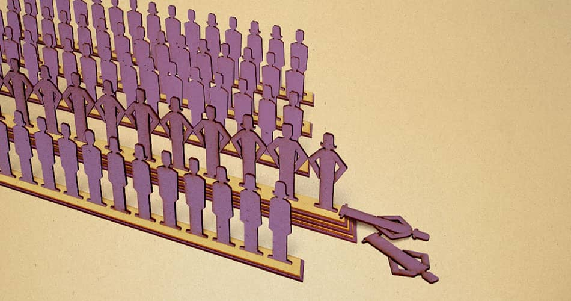

Dr. Guido Raddatz Mindestlöhne gefährden Arbeitsplätze
Vor allem die trotz des jüngsten Aufschwungs auf dem Arbeitsmarkt noch immer schlechten Beschäftigungschancen von Geringqualifizierten, Langzeitarbeitslosen oder Menschen mit mehreren Vermittlungshemmnissen könnten durch einen Mindestlohn weiter Schaden nehmen.
Die flächendeckende Einführung von Mindestlöhnen wäre mit erheblichen ökonomischen Risiken verbunden. Das gilt sowohl für einen branchenübergreifend einheitlichen gesetzlichen Mindestlohn als auch für – differenzierte – Branchenmindestlöhne. Vor allem die trotz des jüngsten Aufschwungs auf dem Arbeitsmarkt noch immer schlechten Beschäftigungschancen von Geringqualifizierten, Langzeitarbeitslosen oder Menschen mit mehreren Vermittlungshemmnissen könnten durch einen Mindestlohn weiter Schaden nehmen. Gleichzeitig sind die meisten sozialpolitischen Argumente und Hoffnungen, die von Mindestlohnbefürwortern ins Feld geführt werden, entweder nicht überzeugend oder es werden zu erwartende negative Nebenwirkungen verkannt.
Mindestlöhne bedrohen Arbeitsplätze
Es liegt auf der Hand, dass Arbeitnehmer nicht auf Dauer in einem marktwirtschaftlich agierenden Unternehmen beschäftigt werden können, wenn sie das Unternehmen mehr kosten als sie erwirtschaften. Übersteigt der zu zahlende Lohn die Produktivität, entsteht folglich Arbeitslosigkeit. Insbesondere Arbeitnehmer mit geringen oder veralteten Qualifikationen sind daher einem besonders hohen Arbeitslosigkeitsrisiko ausgesetzt. So lange es nicht gelingt, ihre Produktivität durch Weiterbildung, Qualifizierung oder auch durch Training on the Job während einer Beschäftigung zu erhöhen, haben diese Menschen nur dann eine Chance auf dem Arbeitsmarkt, wenn sich die Löhne ausreichend flexibel an die jeweilige Produktivität anpassen können. Trotz einiger beschäftigungspolitischer Fortschritte in den letzten Jahren, nicht zuletzt durch eine Ausweitung des Niedriglohnsektors, ist das nur eingeschränkt der Fall.
Qualifikationsspezifische Arbeitslosenquoten belegen, dass das Risiko, arbeitslos zu werden, für Menschen ohne Berufs- oder Schulabschluss um ein Vielfaches höher ist als für gut qualifizierte Arbeitnehmer. Ein für alle Arbeitgeber vorgeschriebener Mindestlohn könnte das Problem der Arbeitslosigkeit deutlich verschärfen, es sei denn, er würde so niedrig gewählt, dass er de facto nicht greift und die Funktionsfähigkeit des Arbeitsmarktes nicht beeinträchtigt. Modelltheoretische Spezialfälle, bei denen nur ein einziger Arbeitgeber Arbeitskräfte nachfragt (Monopson) und in denen ein – nicht zu hoher Mindestlohn – mit einer Beschäftigungsausweitung einhergehen kann, sind mit der Realität und der derzeitigen Situation auf dem Arbeitsmarkt kaum zu vereinbaren und führen im Hinblick auf die zu erwartenden Effekte bei Einführung flächendeckender Mindestlöhne in die Irre.
Empirische Studien zeigen, dass 2008 etwa 15,7 % der abhängig Beschäftigten, das sind etwa 5 Mio. Menschen, einen Stundenlohn von unter 8 Euro erhielten.1 Diese Arbeitsplätze wären bei Einführung eines Mindestlohns zumindest potentiell gefährdet. Das ifo Institut schätzt, dass bei einem Mindestlohn von 7,50 Euro pro Stunde rund 1,1 Millionen Arbeitsplätze tatsächlich wegfielen, wobei die zu erwartenden Anpassungen im Lohngefüge knapp oberhalb des Mindestlohns noch gar nicht berücksichtigt sind.
Da die Beschäftigungseinbußen umso höher sein dürften, je weiter der Mindestlohn über dem Marktlohn liegt, wird gerade denjenigen Arbeitssuchenden, welche die größten Vermittlungshemmnisse haben, der (Wieder)einstieg in den Arbeitsmarkt erschwert. Ein Mindestlohn verschärft somit die Insider-Outsider-Problematik auf dem Arbeitsmarkt.
Mögliche Anpassungs- und Ausweichreaktionen bei Einführung eines Mindestlohns
Es wäre naiv anzunehmen, dass der durch die Einführung eines Mindestlohns verursachte Anstieg der Arbeitskosten keine Beschäftigungsverluste nach sich zöge. Bei einer Überwälzung des durch Mindestlöhne hervorgerufenen Kostenanstiegs auf die Preise kommt es – je nachdem, wie sensibel die Kunden auf Preissteigerungen reagieren – zu einem mehr oder weniger starken Nachfragerückgang. Zudem können Unternehmen auf höhere Arbeitskosten mit unterschiedlichen Ausweichstrategien reagieren. Zum einen steigen die Anreize für Rationalisierungsinvestitionen und den Umstieg auf eine kapitalintensivere Produktionstechnologie, bei der Menschen durch Maschinen ersetzt werden. Bei arbeitsintensiven handelbaren Gütern mit einem hohen Anteil einfacher Tätigkeiten droht zudem die Verlagerung von ganzen Produktionsstätten ins Ausland und die Substitution heimischer Produkte durch Importgüter. Letzteres hätte zur Folge, dass auch die zugehörigen besser bezahlten Arbeitsplätze in Deutschland verloren gehen. Zwar ist dieser Wirkungsmechanismus für ortsgebundene, nicht-handelbare Güter – z.B. alltägliche Dienstleistungen wie das Friseurhandwerk – nicht zu befürchten. Allerdings droht bei diesen, dass steigende Arbeitskosten ein massives Ausweichen in den informellen Sektor der Eigenerstellung und Schwarzarbeit nach sich ziehen – zum Nachteil der regulär beschäftigten Arbeitnehmer.
Die Befürworter von Mindestlöhnen argumentieren zumeist sozialpolitisch und sehen in einem Mindestlohn ein geeignetes Instrument, um Armut und einer ungleichen Einkommensverteilung entgegenzuwirken. Mit Slogans wie „Jeder muss von seiner Arbeit leben können“ und der Gleichsetzung von niedrigen Löhnen mit sozial ungerechten „Dumping- bzw. Armutslöhnen“ wird von Seiten der Mindestlohnbefürworter häufig suggeriert, dass niedrig entlohnte Arbeit menschenunwürdig und ein Zeichen von Ausbeutung der Arbeitnehmer durch Unternehmen bzw. das „Kapital“ sowie Ausdruck von „Schmutzkonkurrenz“ sei. Ökonomische Ursachen für niedrige Löhne, die sowohl in der Person des Arbeitnehmers, aber auch in regionalen Strukturproblemen liegen können, werden dabei allzu gerne ausgeblendet.
Betrachtet man ein häufig herangezogenes „Paradebeispiel“ für Armutslöhne – die niedrige Entlohnung im ostdeutschen Friseurgewerbe – so liegt jedenfalls die Vermutung nahe, dass die dort gezahlten niedrigen Löhne nicht Ergebnis eines besonders unanständigen Ausbeutungsverhalten „großkapitalistischer“ ostdeutscher Friseurmeister gegenüber ihren Angestellten sind, sondern aus den schwierigen ökonomischen Gegebenheiten vor Ort und den – in dieser Branche ohne Zweifel vorhandenen – Ausweichmöglichkeiten in die Schattenwirtschaft resultieren. Staatlicher Lohndirigismus in Form eines Mindestlohns könnte hier, wie in vielen anderen Bereichen auch, beträchtlichen Schaden anrichten.